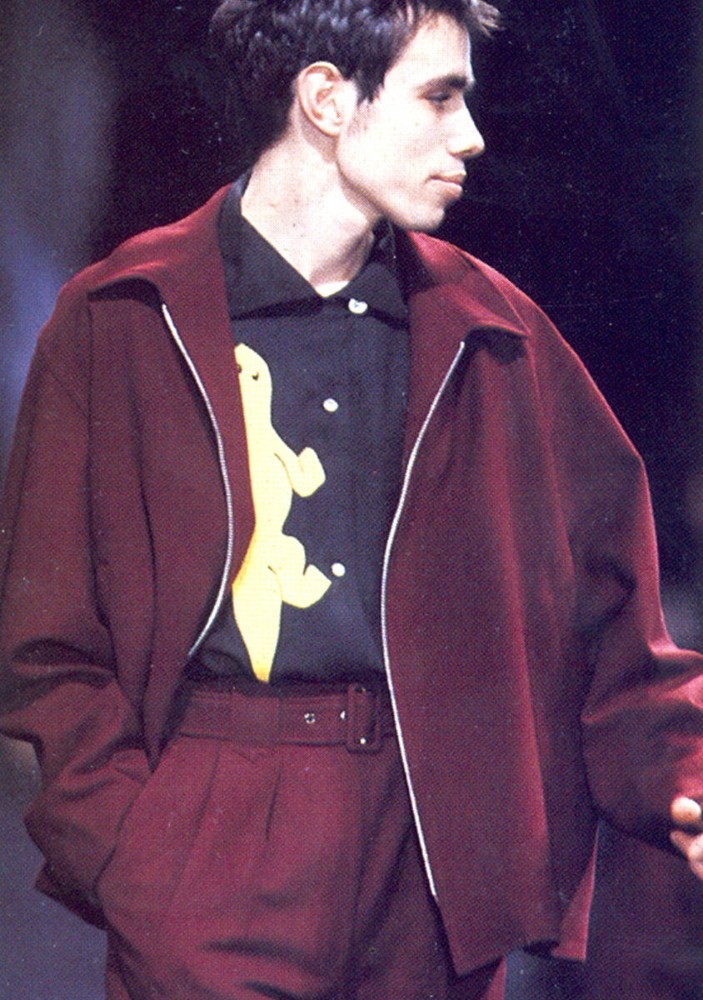

Yohji Yamamoto is a renowned Japanese fashion designer known for his avant-garde and oversized clothing designs. He is a prominent figure in the world of fashion and has a signature style characterized by dark colors, asymmetry, and a deconstructed aesthetic.
Yohji Yamamoto is a prominent Japanese fashion designer born on October 3, 1943, in Tokyo. He studied law at Keio University but eventually pursued his passion for fashion, enrolling at Bunka Fashion College in Tokyo and later studying in Paris. In 1981, he founded his eponymous label, Y's, followed by Yohji Yamamoto in 1986, both known for their avant-garde and oversized designs. Yamamoto's inspirations often come from the Japanese concept of "wabi-sabi," emphasizing simplicity, imperfection, and the beauty of the incomplete, which he translates into his signature dark, asymmetrical, and loosely tailored clothing. His work has had a profound impact on the fashion world, redefining traditional notions of beauty and luxury with his unique, minimalist aesthetic.
